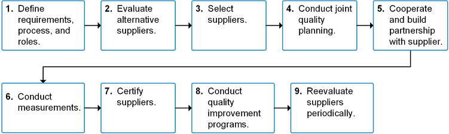
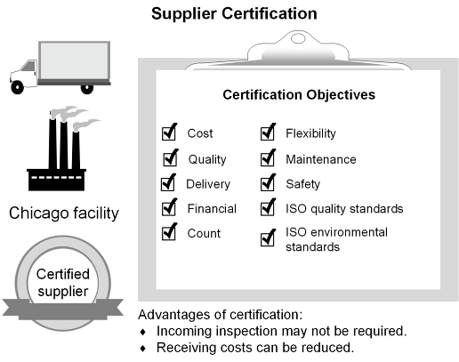

Effective supplier performance measurement is compulsive — tracking all suppliers to some extent, focusing on critical or problematic ones. Best-practice systems:
When evaluating supplier performance, check: promptness and flexibility of response, consistency of schedule, quality assurance processes, financial stability, technology investment, and reliability of their own supply chain partners.
SCOR metrics can be used to judge individual supplier performance.
Certification: extensive on-site evaluation against agreed performance levels in cost, quality, delivery, technical support, and environmental performance.

Nine-step supplier certification process:

For customers: ensures development/supply of safer/cleaner products; safeguards consumers; extends CSR to suppliers; assists supplier selection and ongoing evaluation; may consolidate to fewer suppliers; builds trust to share information.
For suppliers: access to wider market; helps market capabilities; higher quality reduces costs (fewer defects, returns, lost customers); learn more about customer needs; best practices improve throughput; possible single-source opportunity; demonstrates commitment.
Supplier rating systems set performance measures and standards — monitoring quality costs, tracking timeliness of incoming materials, improving supplier performance over time.
Four data sources for rating systems:
Three methods of sharing ratings with suppliers:
Freight claim: a form submitted to the carrier requesting financial reimbursement for loss or damage — can be filed for visible damage, shortages, concealed damages, and delays.
Click card to flip · Use arrows or shuffle to practise